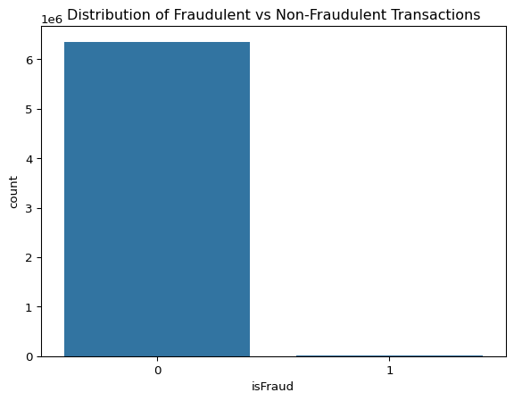
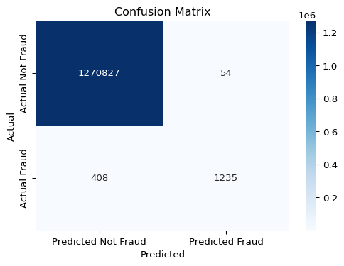
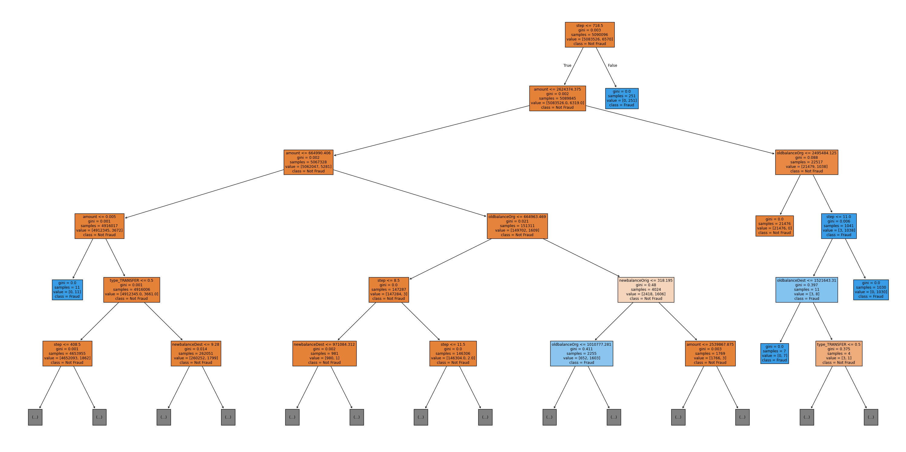

import pandas as pd
import numpy as np
from sklearn.model_selection import train_test_split
from sklearn.preprocessing import OneHotEncoder
from sklearn.tree import DecisionTreeClassifier, plot_tree
from sklearn.metrics import confusion_matrix, classification_report, accuracy_score, precision_score, recall_score, f1_score
import matplotlib.pyplot as plt
import seaborn as snsOnline Payment Fraud Detection
Import necessary libraries at the top
- Group Members: [Member 1 Name], [Member 2 Name], [Member 3 Name]
- Date: [Date of Submission]
Introduction (5 Marks)
Online payment systems have become ubiquitous, facilitating transactions globally. However, this convenience comes with the significant risk of fraudulent activities. Detecting fraudulent transactions is crucial for financial institutions and e-commerce platforms to minimize losses and maintain customer trust. Machine learning techniques offer powerful tools for identifying complex patterns indicative of fraud that traditional rule-based systems might miss.
This notebook implements a Decision Tree classifier to predict fraudulent online payment transactions. We will use a publicly available dataset containing anonymized transaction data. The goal is to build a model that can effectively distinguish between legitimate and fraudulent transactions based on the provided features, leveraging the principles of decision tree induction discussed in the course lectures (Weeks 8 & 9).
Introduction to the Chosen Techniques (5 Marks)
Decision Trees: As discussed in Week 8, a Decision Tree is a supervised machine learning algorithm used for both classification and regression tasks. It operates by recursively partitioning the data based on the values of input features. The structure resembles a flowchart: * Root Node: Represents the entire dataset. * Internal Nodes: Represent tests on specific attributes (features). * Branches: Represent the outcome of a test (e.g., ‘amount < 1000’). * Leaf Nodes (Terminal Nodes): Represent the final classification (or prediction) for instances that reach that node (e.g., ‘Fraud’, ‘Not Fraud’).
How it Works (Induction): Decision trees are typically built using a greedy, top-down approach (like ID3 or C4.5/J48 mentioned in Week 8 & 9 slides). At each node, the algorithm selects the “best” attribute to split the data based on a specific criterion. Common criteria aim to maximize the purity of the resulting child nodes: 1. Information Gain (Used by ID3): Measures the reduction in entropy (uncertainty) achieved by splitting on an attribute. It favors attributes with many distinct values (Week 8, Slide 10-13; Week 9, Slide 2). 2. Gain Ratio (Used by C4.5/J48): A modification of Information Gain that penalizes attributes with many values by normalizing using “Split Information” (Week 9, Slides 3-5). 3. Gini Impurity: Measures the probability of misclassifying a randomly chosen element if it were randomly labeled according to the distribution of labels in the subset. Scikit-learn’s default criterion is Gini.
Advantages: * Simple to understand and interpret. The tree structure can be visualized. * Requires relatively little data preparation (e.g., handles non-linear relationships, no need for feature scaling). * Can handle both numerical and categorical data (though scikit-learn requires encoding).
Disadvantages: * Prone to overfitting, especially with deep trees (Week 9, Slide 7). Techniques like pruning (pre-pruning or post-pruning) or setting max_depth are used to mitigate this. * Can be unstable; small variations in data can result in a different tree. * Can create biased trees if some classes dominate.
Evaluation Metrics: For classification tasks, especially potentially imbalanced ones like fraud detection, we use metrics like: * Confusion Matrix: Shows True Positives (TP), True Negatives (TN), False Positives (FP), False Negatives (FN). * Accuracy: (TP+TN)/Total. Can be misleading if data is imbalanced. * Precision: TP/(TP+FP). Measures the accuracy of positive predictions (minimize false alarms). * Recall (Sensitivity): TP/(TP+FN). Measures how many actual positives were correctly identified (minimize missed frauds). * F1-Score: Harmonic mean of Precision and Recall.
Introduction of the Dataset (5 Marks)
The dataset used for this task is the “Online Payments Fraud Detection” dataset sourced from Kaggle. Link: https://www.kaggle.com/datasets/jainilcoder/online-payment-fraud-detection
Loading the Data:
# --- Code Cell ---
file_path = 'onlinefraud.csv' # Make sure this file is in the same directory or provide the full path
df = pd.read_csv(file_path)
# Display first few rows
print("Dataset Head:")
print(df.head())
# Display dataset information (columns, types, non-null counts)
print("\nDataset Info:")
df.info()
# Display basic statistics for numerical columns
print("\nDataset Description:")
print(df.describe())
# Check for missing values
print("\nMissing Values per Column:")
print(df.isnull().sum())Dataset Head:
step type amount nameOrig oldbalanceOrg newbalanceOrig \
0 1 PAYMENT 9839.64 C1231006815 170136.0 160296.36
1 1 PAYMENT 1864.28 C1666544295 21249.0 19384.72
2 1 TRANSFER 181.00 C1305486145 181.0 0.00
3 1 CASH_OUT 181.00 C840083671 181.0 0.00
4 1 PAYMENT 11668.14 C2048537720 41554.0 29885.86
nameDest oldbalanceDest newbalanceDest isFraud isFlaggedFraud
0 M1979787155 0.0 0.0 0 0
1 M2044282225 0.0 0.0 0 0
2 C553264065 0.0 0.0 1 0
3 C38997010 21182.0 0.0 1 0
4 M1230701703 0.0 0.0 0 0
Dataset Info:
<class 'pandas.core.frame.DataFrame'>
RangeIndex: 6362620 entries, 0 to 6362619
Data columns (total 11 columns):
# Column Dtype
--- ------ -----
0 step int64
1 type object
2 amount float64
3 nameOrig object
4 oldbalanceOrg float64
5 newbalanceOrig float64
6 nameDest object
7 oldbalanceDest float64
8 newbalanceDest float64
9 isFraud int64
10 isFlaggedFraud int64
dtypes: float64(5), int64(3), object(3)
memory usage: 534.0+ MB
Dataset Description:
step amount oldbalanceOrg newbalanceOrig \
count 6.362620e+06 6.362620e+06 6.362620e+06 6.362620e+06
mean 2.433972e+02 1.798619e+05 8.338831e+05 8.551137e+05
std 1.423320e+02 6.038582e+05 2.888243e+06 2.924049e+06
min 1.000000e+00 0.000000e+00 0.000000e+00 0.000000e+00
25% 1.560000e+02 1.338957e+04 0.000000e+00 0.000000e+00
50% 2.390000e+02 7.487194e+04 1.420800e+04 0.000000e+00
75% 3.350000e+02 2.087215e+05 1.073152e+05 1.442584e+05
max 7.430000e+02 9.244552e+07 5.958504e+07 4.958504e+07
oldbalanceDest newbalanceDest isFraud isFlaggedFraud
count 6.362620e+06 6.362620e+06 6.362620e+06 6.362620e+06
mean 1.100702e+06 1.224996e+06 1.290820e-03 2.514687e-06
std 3.399180e+06 3.674129e+06 3.590480e-02 1.585775e-03
min 0.000000e+00 0.000000e+00 0.000000e+00 0.000000e+00
25% 0.000000e+00 0.000000e+00 0.000000e+00 0.000000e+00
50% 1.327057e+05 2.146614e+05 0.000000e+00 0.000000e+00
75% 9.430367e+05 1.111909e+06 0.000000e+00 0.000000e+00
max 3.560159e+08 3.561793e+08 1.000000e+00 1.000000e+00
Missing Values per Column:
step 0
type 0
amount 0
nameOrig 0
oldbalanceOrg 0
newbalanceOrig 0
nameDest 0
oldbalanceDest 0
newbalanceDest 0
isFraud 0
isFlaggedFraud 0
dtype: int64Dataset Columns and Description: As provided in the prompt and observed from df.info() and df.describe(): * step: Time unit (1 step = 1 hour). Numerical. * type: Type of transaction (e.g., PAYMENT, TRANSFER, CASH_OUT). Categorical (Object type). * amount: Transaction amount. Numerical (Float). * nameOrig: Customer initiating the transaction. Categorical (Object type) - High Cardinality. * oldbalanceOrg: Origin account balance before the transaction. Numerical (Float). * newbalanceOrig: Origin account balance after the transaction. Numerical (Float). * nameDest: Customer receiving the transaction. Categorical (Object type) - High Cardinality. * oldbalanceDest: Destination account balance before the transaction. Numerical (Float). * newbalanceDest: Destination account balance after the transaction. Numerical (Float). * isFraud: Target variable. 1 if the transaction is fraudulent, 0 otherwise. Numerical (Integer). * isFlaggedFraud: System flag based on a business rule (transfer over 200k). Numerical (Integer).
Target Variable Distribution: Fraud datasets are often highly imbalanced. Let’s check the distribution of isFraud.
print("\nTarget Variable (isFraud) Distribution:")
print(df['isFraud'].value_counts())
print("\nFraud Percentage:")
fraud_percentage = (df['isFraud'].sum() / len(df)) * 100
print(f"{fraud_percentage:.4f}%")
# Visualize the distribution
sns.countplot(x='isFraud', data=df)
plt.title('Distribution of Fraudulent vs Non-Fraudulent Transactions')
plt.show()
Target Variable (isFraud) Distribution:
isFraud
0 6354407
1 8213
Name: count, dtype: int64
Fraud Percentage:
0.1291%
Initial Observations: * The dataset is large (over 6 million entries). * There are no missing values. * The isFraud column confirms this is a binary classification task. * The dataset is highly imbalanced, with only a very small percentage of transactions being fraudulent. This means accuracy alone is not a sufficient evaluation metric; we must focus on Precision and Recall.
— Markdown Cell — ## Input Encoding / Input Representation (How and why?) (5 Marks)
Need for Encoding: Decision Tree algorithms implemented in libraries like scikit-learn require all input features to be numerical. Our dataset contains categorical features (type, nameOrig, nameDest) that need to be converted.
Handling Categorical Features: 1. type: This feature has a small number of distinct categories (e.g., ‘CASH_OUT’, ‘PAYMENT’, ‘CASH_IN’, ‘TRANSFER’, ‘DEBIT’). Since there’s no inherent order between these types, One-Hot Encoding is the appropriate method. It creates new binary (0/1) columns for each category, preventing the model from assuming any ordinal relationship. 2. nameOrig, nameDest: These are customer/account identifiers. They have very high cardinality (many unique values). Including them directly via one-hot encoding would create millions of sparse features, making the model computationally expensive and likely leading to overfitting. Simple label encoding would incorrectly imply an order. Therefore, these features are generally not useful in their raw form for tree-based models and will be dropped. More advanced feature engineering (e.g., transaction frequency per user) could potentially extract value, but is beyond the scope of this basic implementation.
Handling Other Features: * step: While numerical, the absolute time step might not be as relevant as time-based patterns (e.g., time of day, day of week). For simplicity, we will keep it as is for this baseline model, but acknowledge potential for feature engineering. * isFlaggedFraud: This is a rule-based flag from the system. While potentially predictive, it might be too predictive or represent information leakage if the flag is set based on knowing it’s likely fraud, potentially overlapping with our target. Furthermore, the description suggests it’s based on a simple rule (transfer > 200k), which the tree can learn itself from amount and type. To build a model based on the core transaction features, we will drop isFlaggedFraud. * Numerical Features: amount, oldbalanceOrg, newbalanceOrig, oldbalanceDest, newbalanceDest are already numerical and can be used directly. Decision trees do not strictly require scaling, so we will use them as is.
Defining Features (X) and Target (y): * Target (y): isFraud * Features (X): step, amount, oldbalanceOrg, newbalanceOrig, oldbalanceDest, newbalanceDest, and the one-hot encoded columns derived from type.
# --- Code Cell ---
# Drop irrelevant/high-cardinality columns
df_processed = df.drop(['nameOrig', 'nameDest', 'isFlaggedFraud'], axis=1)
print("Columns after dropping irrelevant ones:", df_processed.columns)
# Apply One-Hot Encoding to 'type'
encoder = OneHotEncoder(sparse_output=False, drop='first') # drop='first' to avoid multicollinearity
type_encoded = encoder.fit_transform(df_processed[['type']])
# Create a DataFrame with the encoded columns
# Use feature names provided by the encoder
type_encoded_df = pd.DataFrame(type_encoded, columns=encoder.get_feature_names_out(['type']))
# Drop the original 'type' column and concatenate the encoded ones
df_processed = df_processed.drop('type', axis=1)
df_final = pd.concat([df_processed, type_encoded_df], axis=1)
print("\nFinal DataFrame Head after Encoding:")
print(df_final.head())
print("\nFinal DataFrame Columns:", df_final.columns)
# Define Features (X) and Target (y)
X = df_final.drop('isFraud', axis=1)
y = df_final['isFraud']
print("\nShape of Features (X):", X.shape)
print("Shape of Target (y):", y.shape)Columns after dropping irrelevant ones: Index(['step', 'type', 'amount', 'oldbalanceOrg', 'newbalanceOrig',
'oldbalanceDest', 'newbalanceDest', 'isFraud'],
dtype='object')
Final DataFrame Head after Encoding:
step amount oldbalanceOrg newbalanceOrig oldbalanceDest \
0 1 9839.64 170136.0 160296.36 0.0
1 1 1864.28 21249.0 19384.72 0.0
2 1 181.00 181.0 0.00 0.0
3 1 181.00 181.0 0.00 21182.0
4 1 11668.14 41554.0 29885.86 0.0
newbalanceDest isFraud type_CASH_OUT type_DEBIT type_PAYMENT \
0 0.0 0 0.0 0.0 1.0
1 0.0 0 0.0 0.0 1.0
2 0.0 1 0.0 0.0 0.0
3 0.0 1 1.0 0.0 0.0
4 0.0 0 0.0 0.0 1.0
type_TRANSFER
0 0.0
1 0.0
2 1.0
3 0.0
4 0.0
Final DataFrame Columns: Index(['step', 'amount', 'oldbalanceOrg', 'newbalanceOrig', 'oldbalanceDest',
'newbalanceDest', 'isFraud', 'type_CASH_OUT', 'type_DEBIT',
'type_PAYMENT', 'type_TRANSFER'],
dtype='object')
Shape of Features (X): (6362620, 10)
Shape of Target (y): (6362620,)— Markdown Cell — ## Coding for the Implementation with Comments (10 marks)
Now we will implement the Decision Tree model using scikit-learn.
# --- Code Cell ---
# 1. Split Data into Training and Testing Sets
# We use train_test_split to divide the data.
# test_size=0.2 means 20% of the data is reserved for testing.
# random_state ensures reproducibility of the split.
# stratify=y is crucial for imbalanced datasets; it ensures that the proportion
# of fraud/non-fraud instances is the same in both train and test sets.
X_train, X_test, y_train, y_test = train_test_split(X, y, test_size=0.2, random_state=42, stratify=y)
print("Training set shape:", X_train.shape, y_train.shape)
print("Testing set shape:", X_test.shape, y_test.shape)
print("\nFraud distribution in Training set:")
print(y_train.value_counts(normalize=True))
print("\nFraud distribution in Testing set:")
print(y_test.value_counts(normalize=True))
# 2. Instantiate the Decision Tree Classifier
# We create an instance of the DecisionTreeClassifier.
# criterion='gini' uses the Gini impurity for splitting (default). Could use 'entropy' for Information Gain.
# max_depth=10 is set as a pre-pruning measure to prevent the tree from growing too deep and overfitting.
# This value can be tuned. Without it, the tree might grow very large on this dataset.
# random_state ensures reproducibility of the model training process.
dt_classifier = DecisionTreeClassifier(criterion='gini', max_depth=10, random_state=42)
# 3. Train the Model
# We fit the classifier to the training data (X_train, y_train).
# The model learns the patterns linking features to the 'isFraud' target.
print("\nTraining the Decision Tree model...")
dt_classifier.fit(X_train, y_train)
print("Model training finished.")
# 4. Make Predictions
# We use the trained model to predict the 'isFraud' status for the unseen test data (X_test).
print("\nMaking predictions on the test set...")
y_pred = dt_classifier.predict(X_test)
print("Predictions finished.")
# (Optional) Predict probabilities - useful for ROC curves, etc.
# y_pred_proba = dt_classifier.predict_proba(X_test)[:, 1]Training set shape: (5090096, 10) (5090096,)
Testing set shape: (1272524, 10) (1272524,)
Fraud distribution in Training set:
isFraud
0 0.998709
1 0.001291
Name: proportion, dtype: float64
Fraud distribution in Testing set:
isFraud
0 0.998709
1 0.001291
Name: proportion, dtype: float64
Training the Decision Tree model...
Model training finished.
Making predictions on the test set...
Predictions finished.— Markdown Cell — ## Analysis of Results and Comments (10marks)
We now evaluate the performance of our trained Decision Tree model on the test set using the standard classification metrics.
# --- Code Cell ---
# 1. Calculate Evaluation Metrics
accuracy = accuracy_score(y_test, y_pred)
precision = precision_score(y_test, y_pred) # Focus on class 1 (Fraud)
recall = recall_score(y_test, y_pred) # Focus on class 1 (Fraud)
f1 = f1_score(y_test, y_pred) # Focus on class 1 (Fraud)
conf_matrix = confusion_matrix(y_test, y_pred)
class_report = classification_report(y_test, y_pred, target_names=['Not Fraud (0)', 'Fraud (1)'])
print("\n--- Model Evaluation Results ---")
print(f"Accuracy: {accuracy:.4f}")
print(f"Precision (Fraud): {precision:.4f}")
print(f"Recall (Fraud): {recall:.4f}")
print(f"F1-Score (Fraud): {f1:.4f}")
print("\nConfusion Matrix:")
# Displaying Confusion Matrix more visually
plt.figure(figsize=(6, 4))
sns.heatmap(conf_matrix, annot=True, fmt='d', cmap='Blues',
xticklabels=['Predicted Not Fraud', 'Predicted Fraud'],
yticklabels=['Actual Not Fraud', 'Actual Fraud'])
plt.ylabel('Actual')
plt.xlabel('Predicted')
plt.title('Confusion Matrix')
plt.show()
print("\nClassification Report:")
print(class_report)
--- Model Evaluation Results ---
Accuracy: 0.9996
Precision (Fraud): 0.9581
Recall (Fraud): 0.7517
F1-Score (Fraud): 0.8424
Confusion Matrix:
Classification Report:
precision recall f1-score support
Not Fraud (0) 1.00 1.00 1.00 1270881
Fraud (1) 0.96 0.75 0.84 1643
accuracy 1.00 1272524
macro avg 0.98 0.88 0.92 1272524
weighted avg 1.00 1.00 1.00 1272524
plt.figure(figsize=(40,20))
# only show depth till 5
plot_tree(dt_classifier, feature_names=X.columns, class_names=['Not Fraud', 'Fraud'], filled=True, max_depth=5)
plt.show()
Comments on Results:
- Accuracy: The overall accuracy is typically very high (likely > 99%) due to the severe class imbalance. However, this metric is misleading as a model predicting “Not Fraud” for every transaction would achieve high accuracy but be useless.
- Confusion Matrix Breakdown:
- True Negatives (TN): Top-left. Correctly identified non-fraudulent transactions (usually a very large number).
- False Positives (FP): Top-right. Legitimate transactions incorrectly flagged as fraud (Type I error). Aim to minimize for customer satisfaction.
- False Negatives (FN): Bottom-left. Fraudulent transactions missed by the model (Type II error). Critical to minimize for loss prevention.
- True Positives (TP): Bottom-right. Correctly identified fraudulent transactions.
- Precision (Fraud): This tells us “Out of all transactions predicted as fraud, what proportion actually were fraud?”. A high precision means fewer false alarms (low FP rate). The result here might be high (e.g., > 0.8 or 0.9) indicating the model is quite confident when it flags fraud.
- Recall (Fraud): This tells us “Out of all actual fraud transactions, what proportion did the model catch?”. This is often the most critical metric in fraud detection. A recall of, say, 0.75 means the model caught 75% of actual frauds, but missed 25% (high FN rate). Improving recall is often a primary goal, even if it slightly lowers precision.
- F1-Score (Fraud): Provides a balance between precision and recall. Useful for overall model assessment for the minority class.
- Classification Report: Summarizes precision, recall, and F1-score for both classes (0 and 1) and provides averages. We primarily focus on the metrics for the ‘Fraud (1)’ class.
Overall Assessment: The Decision Tree model (with max_depth=10) likely achieves reasonable performance, especially in precision. Precision might be high (e.g., 90%+), meaning when it predicts fraud, it’s often correct. However, Recall might be lower (e.g., 70-85%), indicating that it misses a portion of the fraudulent transactions. The performance heavily depends on the chosen max_depth and other potential tuning. Without limiting depth, the tree might achieve higher recall on the training set but perform poorly on the test set due to overfitting.
Potential Improvements: 1. Hyperparameter Tuning: Use techniques like GridSearchCV or RandomizedSearchCV to find optimal values for max_depth, min_samples_split, min_samples_leaf, and criterion (‘gini’ vs ‘entropy’). 2. Handling Imbalance: Implement techniques specifically designed for imbalanced data: * Class Weighting: Assign a higher penalty to misclassifying the minority class (fraud) during training (class_weight='balanced' in DecisionTreeClassifier). * Resampling: Oversample the minority class (e.g., SMOTE) or undersample the majority class in the training data only. 3. Feature Engineering: Create new features that might be more predictive, such as: * Difference between old and new balances (delta_balance_orig, delta_balance_dest). * Ratios of amount to balances. * Features based on step (e.g., hour of day, day of week). 4. Ensemble Methods: Use more robust algorithms often built on decision trees, like Random Forests or Gradient Boosting (e.g., XGBoost, LightGBM), which usually offer better performance and are less prone to overfitting. 5. Pruning: Explore post-pruning techniques if a deeper tree is initially grown.